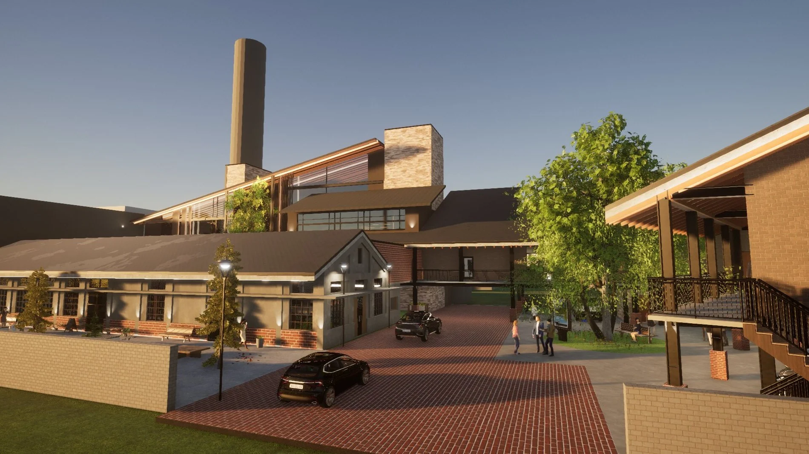

Time-Space Station — Dali Tobacco Plant
Intertwining Heritage with Elevated Skywalks

Situated on a key arterial corridor linking Taichung and Wufeng, the historical Tobacco Redrying Plant operated until late 2017.
Core objectives include cultural heritage preservation, local ecological stewardship, sustainable tourism, economic diversification, and vibrant community shared spaces.